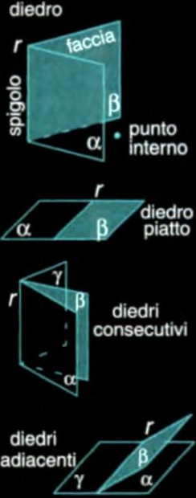
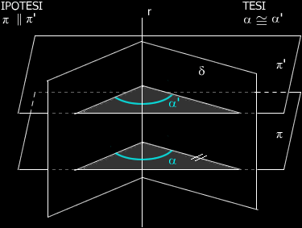
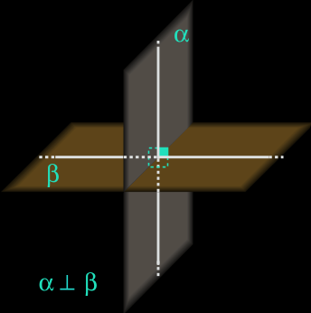
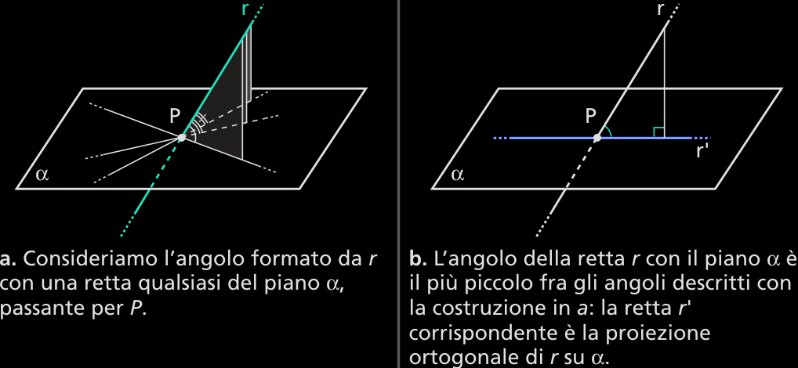

Rette, piani, poliedri
La posizione di due rette nello spazio
Se due rette nello spazio appartengono a uno stesso piano, si dicono complanari; in caso contrario, si dicono sghembe.
Se le rette sono complanari, le posizioni possibili sono quelle già studiate nel piano, cioè le rette possono essere incidenti.
La posizione di due piani nello spazio
Due piani distinti aventi in comune una retta si dicono incidenti. Due piani sono paralleli se non hanno punti in comune o se sono coincidenti.
La relazione di parallelismo fra piani gode delle proprietà riflessiva, simmetrica e transitiva, come la relazione di parallelismo fra rette:
proprietà riflessiva: ogni piano è parallelo a se stesso (α//α);
proprietà simmetrica: se α // β , è anche β // α;
proprietà transitiva: se α // β e β // γ, allora α// γ.
La posizione di una retta e di un piano nello spazio
Dati una retta e un piano, sono possibili tre casi:
tutti i punti della retta appartengono al piano, ossia essa è giacente sul piano (o appa tenente al piano) (figura 25);
la retta ha un solo punto in comune con il piano, ossia è incidente al piano (figura 25b);
la retta non ha alcun punto in comune con il piano, ossia è parallela al piano (figura 25c).
Le rette perpendicolari a un piano
Definizione 3.11.1 (Retta perpendicolare a un piano) Una retta è perpendicolare a un piano quando è incidente al piano e risulta perpendicolare a tutte le rette del piano passanti per il punto di incidenza. □
Una retta incidente ma non perpendicolare a un piano si chiama obliqua.
Il punto di incidenza si chiama piede della perpendicolare.
Si possono dimostrare le seguenti proprietà.
Dati un piano e un punto P, esiste ed è unica la retta passante per il punto e perpendicolare al piano (figure 4 e 4b);
Due rette perpendicolari a uno stesso piano sono parallele fra loro (figura 4c);
Se due piani sono perpendicolari a una stessa retta in punti distinti, allora sono paralleli (figura 5a);
Le intersezioni tra un piano e due piani paralleli sono rette parallele (figura 5b).
La distanza fra due piani paralleli
Dati due piani paralleli, si dimostra che una retta perpendicolare a uno di essi è perpendicolare anche all’altro. Inoltre, scelte due rette perpendicolari a due piani paralleli, i segmenti intercettati dai piani su di esse sono congruenti
. Definiamo allora come distanza fra due piani paralleli la lunghezza del segmento intercettato dai due piani su una qualunque retta a essi perpendicolare.
Definizione 3.11.2 (Distanza di un punto da un piano) Dati un piano e un punto, la distanza del punto dal piano è la lunghezza del segmento che ha per estremi il punto e il piede della perpendicolare al piano passante peri il punto. □
Se il punto appartiene al piano, la distanza tra il punto e il piano è nulla.
I diedri e i piani perpendicolari
Definizione 3.11.3 (Diedro) Si chiama diedro ciascuna delle due parti in cuo lo spazio è diviso da due semipiani α e β, aventi come origine una stessa retta r. □
L'insieme di questi due semipiani divide lo spazio di due parti, ciascuna delle quali (compresi i due semipiani) si dice diedro. I due semipiani vengono detti facce del diedro e costituiscono il contorno o supeficie del diedro, la loro retta comune è detta spigolo del diedro.
Un diedro di facce α e β e spigolo r si indica con αr̂β. I punti del diedro non appartenenti al contorno sono detti punti interni.
Il diedro nello spazio ha molte analogie con l'angolo nel piano. Dei due diedri formati da due semipiani, non opposti, si dice convesso quello che non contiene i prolungamenti delle sue facce e si dice concavo quello che contiene tali prolungamenti. In questo caso i due diedri si dicono fra loro esplementari.
Il diedro le cui facce sono semipiani opposti è detto piatto.
Un diedro si dice giro se le sue facce coincidono e se comprende tutti i punti dello spazio.
Un diedro viene detto nullo quando le sue facce sono coincidenti, ma non ha alcun punto interno.
Due diedri si dicono consecutivi se hanno in comune solamente lo spigolo e una faccia. Due diedri si dicono adiacenti se sono consecutivi e le facce non comuni sono semipiani opposti.
Definizione 3.11.3 (Sezione di un diedro) Si chiama sezione di un diedro l'angolo che si ottiene come intersezione fra il diedro e un qualunque piano che interseca il suo spigolo. □
Teorema 3.11.4 Sezione parallele di uno stesso diedro sono congruenti.
Dim. Sui lati dell'angolo di vertice C, intersezione fra il diedro e il piano γ, disegnamo i segmenti CA e CB a piacere.
Sui lati dell'angolo di vertice C', intersezione fra il diedro e il piano γ', scegliamo A' e B' in modo che risulti CA ≌ C'A' e CB ≌ C'B'.
Le rette CA e C'A' sono parallele perché sono le intersezioni del piano α con i due piani paralleli γ e γ'.
CC'A'A è un parallelogramma, in quanto ha i lati opposti congruenti e paralleli; quind CC' è congruente e parallelo a AA'.
Analogamente, si dimostra che CC'B'B è un parallelogramma; quindi CC' è congruente e parallelo a BB'.
Di conseguenza, anche AA'B'B è un parallelogramma, poiché i lati AA' e BB', per la proprietà transitiva, sono paralleli e congruenti tra loro; quindi AB è congruente e parallelo ad A'B'.
Consideriamo ora i trianogli ABC e A'B'C': sono congruenti per il terzo criterio di congruenza, in quanto hanno tutti e tre i lati ordinatamente congruenti; di conseguenza, l'angolo AĈB è congruente all'angolo A'ĈB'. Concludiamo che xĈy ≌ x'Ĉy'. □
Una conseguenza del teorema precedente è che, se intersechiamo un diedro con piani perpendicolari allo spigolo, gli angoli che otteniamo sui piani sono congruenti fra loro.
Chiamiamo allora sezione normale di un diedro l’angolo che si ottiene come intersezione fra il diedro e un qualunque piano perpendicolare al suo spigolo.
Due diedri sono congruenti se sono congruenti le loro sezioni normali. Chiamiamo ampiezza di un diedro l’ampiezza della sua sezione normale. Un diedro si dice etto, acuto o ottuso a seconda che la sua sezione normale sia un angolo retto, acuto o ottuso.
Possiamo ora dare nello spazio la definizione di piani perpendicolari, analoga alla definizione di rette perpendicolari nel piano.
Piani perpendicolari
Definizione 3.11.5 (Piani perpendicolari) Due piani incidenti sono perpendicolari qunado dividono lo spazio in quattro diedri retti. □
Sia r una retta incidente al piano α: un piano generico, che passa per r, interseca in un’altra retta (figura 29 ). L’angolo formato dalle due rette dipende dalla scelta del piano variabile e risulta minimo quando il piano è perpendicolare ad . In tal caso, si parla di angolo della retta r con il piano α (figura 29b) e la retta r' è la proiezione di r su α.
I poliedri
Un poliedro è una figura solida, limitata da un numero finito di poligoni appartenenti a piani diversi e tali che il piano di ogni poligono non attraversi il solido.
I poligoni sono detti facce del poliedro, i lati dei poligoni spigoli del poliedro, i vertici dei poligoni vertici del poliedro.